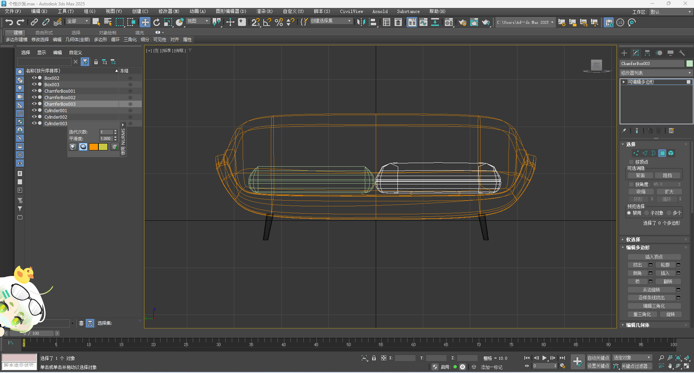
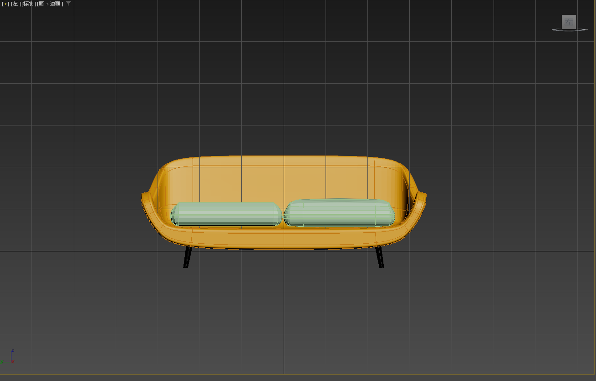
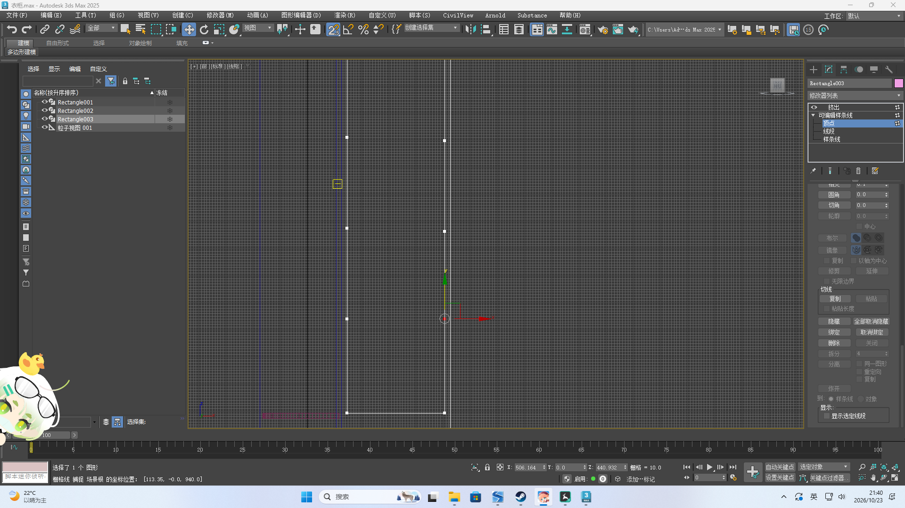
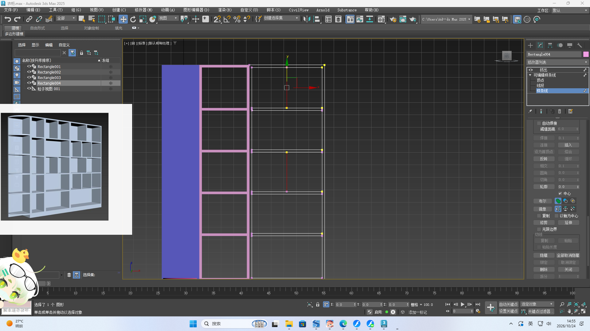
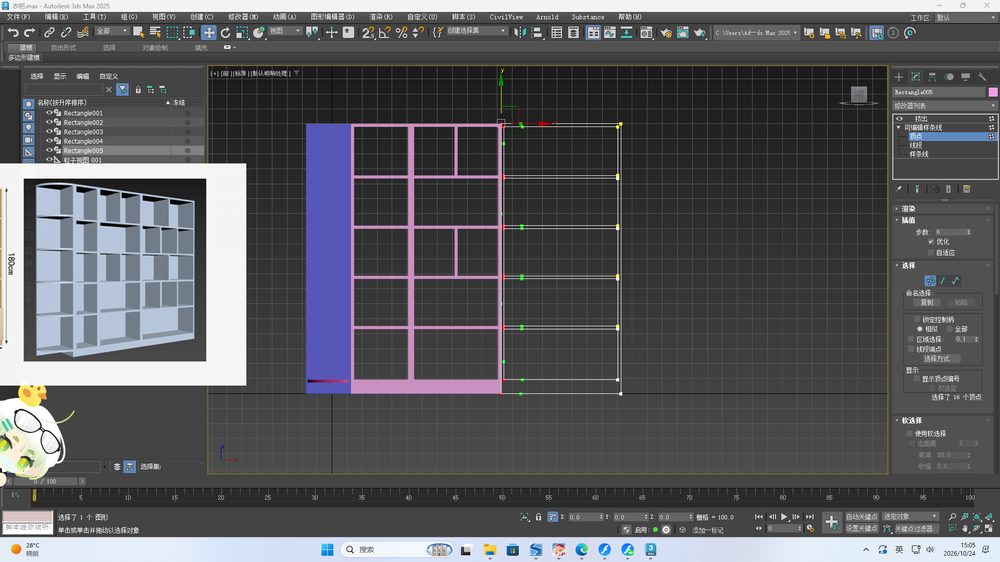
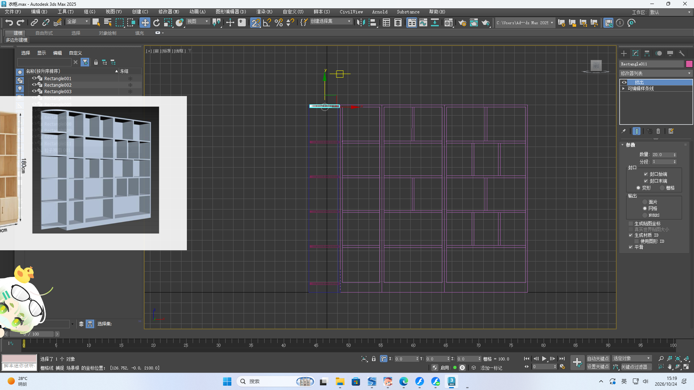
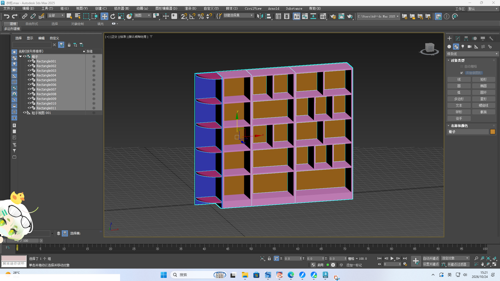

切角底座 · 多边形编辑 · 镜像复制
样条线 · 轮廓挤出 · 2.5维调整
沙发底座的制作从一个正方体开始。为了让底座四个角不那么尖锐，我使用了切角工具（Chamfer），对正方体的四条垂直边和上边的角进行切角处理，使棱角变得圆润自然。切角时注意控制切角的幅度，过大会让底座显得松软，过小则不够柔和，经过几次调整才找到合适的数值。
底座完成之后，进入多边形编辑模式。沙发的整体轮廓不是靠新的基本体拼接出来的，而是直接在正方体的基础上调整顶点和线来塑形：选中需要外扩或内收的顶点，用移动工具一点点调整位置；同时结合边线的缩放和移动，让座面、扶手和靠背的过渡更自然。
为了减少重复劳动，我先只做了沙发的一半——把对称轴上的顶点对齐，另一半通过复制得到，再整体检查接缝处是否贴合。这一步需要对形状有整体预判，否则调整一半的时候很难想象另一半的效果。
先制作出一个沙发腿，然后通过镜像复制做出其他沙发腿。镜像之前要确认轴心位置是否正确，否则复制出来的腿会错位。我选择了对称轴上的合适位置作为镜像中心，一次性得到了四个对称的沙发腿。


用2.5维工具移动顶点使它等高。

通过勾选中心点，可以创建对称的中心点。

如果拆分导致顶点过多，可以选择顶点转化为角点。

选择制作好的隔层，先锁定轴，开2.5维，然后移动复制隔层。

最后用样条线制作背板，完成衣柜。
